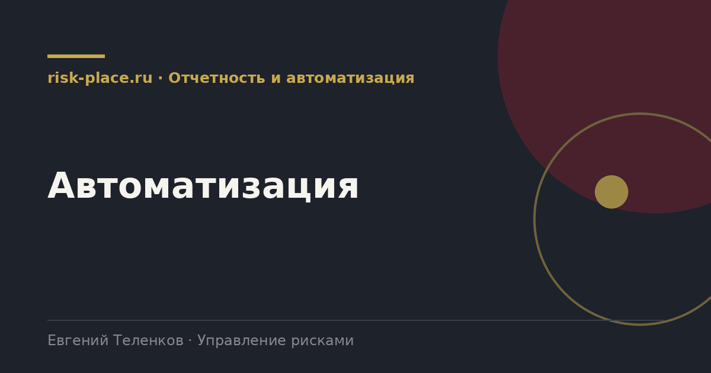

risk-
risk-Единый реестр с историей
- Одно место хранения, оценка как запись с датой, справочники. Снимает проблему версий и дает динамику
Главная · Библиотека · Отчетность и автоматизация · Автоматизация
Библиотека · Отчетность и автоматизация
Автоматизация усиливает то, что уже работает, и обнажает то, что не работает. Порядок действий определяет результат.

Каждый следующий шаг имеет смысл после предыдущего.
Список, который экономит месяцы.
Причины неудач по частоте.
| Ошибка | Последствие |
|---|---|
| Автоматизация вместо построения процесса | Система есть, данных нет, потому что процесс не работал и раньше |
| Перенос всей сложности методологии в настройку | Проект растягивается, система становится неудобной, ввод игнорируется |
| Отсутствие ресурса со стороны бизнеса | Решения принимаются медленно, требования уточняются постфактум |
| Недооценка миграции данных | Самая трудоемкая часть, регулярно планируется по остаточному принципу |
| Нет обучения и сопровождения после запуска | Через квартал возвращаются к таблицам |
| Выбор платформы до определения требований | Требования подгоняются под возможности продукта |
Три признака, каждого из которых достаточно. Подготовка квартальной отчетности занимает больше трех рабочих дней ручного труда. Число владельцев рисков превысило двадцать, и сбор оценок превратился в переписку. История оценок теряется, и невозможно ответить на вопрос о динамике.
И признак обратного свойства. Если реестр ведется формально и оценки списываются из прошлого квартала, автоматизация ничего не изменит. Она сделает формальность быстрее и заметнее, но не превратит ее в работу. Сначала процесс, потом инструмент.
Частые вопросы
Одна форма для любого вопроса
Расскажем о ближайших датах, предложим формат под ваш состав участников и назовем порядок бюджета.
Предпочитаете почту — напишите на info@risk-place.ru. Адрес: Москва, улица Скаковая, 32с2.